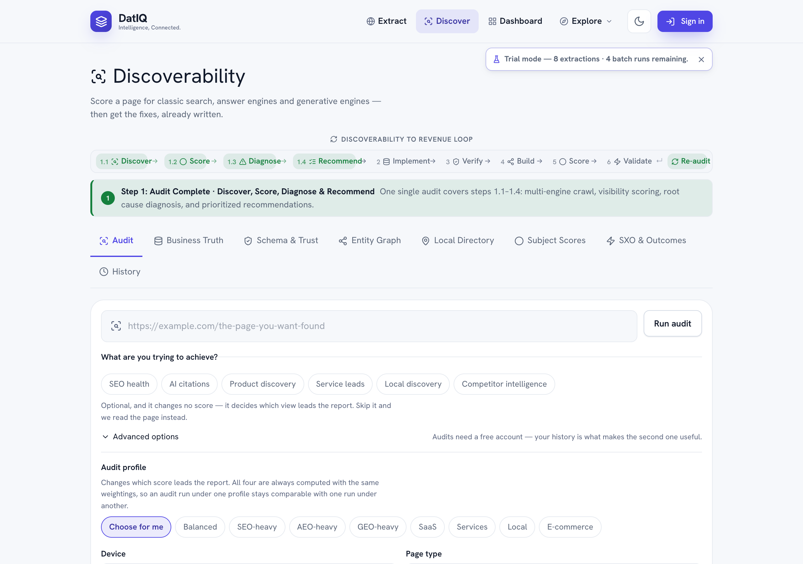

Discoverability — SEO, AEO & GEO audits
Extraction answers "what is on this page?".
Extraction answers "what is on this page?". Discoverability answers a different question about a page you usually already own: "can this page be found, and can an AI assistant quote it?"
Open Discover in the top nav, paste a URL, and press Run audit. You can also paste a URL into the Home composer and press Discover, which carries it straight here.

The operating loop
The step ribbon at the top of every Discoverability screen shows where you are:
| Step | What happens |
|---|---|
| 1.1 Discover · 1.2 Score · 1.3 Diagnose · 1.4 Recommend | One audit does all four in a single run — it reads the page, scores it, explains what is wrong and writes the fixes. |
| 2. Implement | Record your canonical business facts and check your schema and trust signals. |
| 3. Validate | Re-measure search-to-outcome friction and confirm fixes worked. |
| 4. Benchmark | Score your brand, products and services and compare over time. |
| 5. Expand | Grow your entity graph and check your local directory listings. |
Which audit you are working on
Once an audit is open, a context bar shows it in brief — its short id in brackets, then the domain, audit profile, device, page type and when it ran — for example Active audit (9a8b7c6d) acme.com · Balanced · Mobile · Pricing · 15 Sep 2026. The same audit stays selected as you move between tabs, so every tab works on the same page until you open a different one.
Tabs show what you last saw on them straight away and then refresh from your account, so you are never staring at an empty screen while data loads. Nothing is kept in the browser after you sign out.
What it measures
Search has split into three audiences that reward different things, so DatIQ scores all three separately and shows you where they disagree.
| Score | Audience | Rewards |
|---|---|---|
| SEO | Classic search engines | Crawlability, rendering, canonicals, page speed |
| AEO | Answer engines (ChatGPT, Perplexity, AI Overviews) | Concise, answer-first passages that survive being quoted |
| GEO | Generative engines | A clear machine-readable identity, and being cited as the source |
| Overall | All three, weighted | A balanced view when you are not optimising for one in particular |
Underneath those sit four pillars, and every score traces back to them:
- Answer Clarity — is there a self-contained answer near the top, and would it still make sense quoted on its own?
- Entity Authority — can a machine tell who published this, and do answer engines already cite you?
- Structural Hierarchy — is the page segmented cleanly enough for a retrieval system to find the right section?
- Technical Accessibility — can bots reach, render and trust the page at all, including the crawlers that feed AI answers?
Open any pillar card to see every individual signal, its weight, and its score.
"Not measured" is not zero
Some signals need something outside the page — Core Web Vitals come from Google's field data, and citation footprint comes from sampling an answer engine. When one of those is unavailable, DatIQ marks it not measured and leaves it out of the score entirely, redistributing its weight across the signals it could read.
That is why every score shows a coverage figure beside it. A 92 built on 70% of the signals is not the same as a 92 built on all of them, and you should be able to see which one you are looking at.
Some signals are marked not applicable instead. A pricing page has no step-by-step procedure, so it is never asked for HowTo markup, and it is not marked down for the absence.
Blocking issues
A few problems undermine a page no matter how good the writing is — the page is marked noindex, AI crawlers are disallowed, the content only appears after JavaScript runs. These scale the whole score down rather than costing it a few points, and the report shows you the arithmetic: your score before the blockers, the multiplier, and the result.
The fix list
Every finding becomes a prioritised recommendation with:
- who does it — content, SEO, engineering, brand or product
- how much it is worth on your page, not in general
- how hard it is, and how confident we are the finding is right
- something to paste, where one exists
That last one is the point. Where a fix is a piece of markup or a block of copy, DatIQ writes a draft from what your page already contains — FAQ schema built from your visible questions, an Organization block carrying your real profile links, a corrected heading outline that leaves your wording alone and fixes only the nesting.
Anything the audit could not observe appears as a TODO: placeholder rather than an invention. Fill those in before you publish — a schema block containing a made-up founder name is worse than no schema block, because it tends to get published without being read.
Sort the queue by owner, accept what you will do, and dismiss what does not apply. A dismissal asks for a reason, because three months later a dismissal with no reason is indistinguishable from a mis-click.
Proving the fix worked
An audit is a reading. Two are a direction.
Press Re-audit after you have made changes and DatIQ measures the page again and compares it against the previous run: what moved, what was resolved, and — most importantly — anything new that appeared, because a fix that introduces a regression is exactly what you want to catch before it compounds.
The comparison only reports a change when both audits actually measured the same thing. If Core Web Vitals were unavailable last week and available today, that difference is labelled as not comparable rather than being presented as your improvement.
The History panel plots every audit of that page over time. A gap in the line is a run where that score could not be measured — it is drawn as a gap rather than a straight line, because joining two points through a reading that never happened would show a trend you did not have.
Reading a report
Every report opens with the page it is about — the full URL, when the audit ran, and the profile, device and page type it ran under — followed by a short written summary of what the numbers mean. The summary names the findings that matter rather than restating the scores, so somebody who reads only the first paragraph still knows what was concluded.
It is written once, the first time the report is opened, and then kept with the audit — so it travels into every export and does not change between readings. Occasionally it is unavailable; the report says so, and the findings below it are unaffected.
Below the summary, the four pillars are laid out in two columns across the full width of the report — Answer Clarity beside Entity Authority, Structural Hierarchy beside Technical Accessibility — and each can be expanded independently to show the signals underneath it and what each one scored. Opening a second pillar does not close the first, so two can be compared side by side. Exported PDF and Markdown reports use the same two-column pillar layout.
Entity graph approvals
Approving a relationship also approves the two entities it connects, if they are still only proposed. Approval normally means a second person looked. If you work alone, DatIQ records your approval as a single-founder approval — including when you proposed one of the connected entities yourself. If a teammate proposed the relationship but you proposed an entity it connects, you are told plainly and can approve it as a single-founder approval or ask the teammate.
Local directories that do not apply
The local directory list covers every source relevant to a region, and not every source fits every business — a restaurant directory is no use to a software company. Choose Not applicable? Ignore on a source, pick a reason, and it is excluded from NAP checks for that business record. Ignored sources are hidden under Show ignored, keep the reason and date you recorded, and can be restored at any time.
Exporting a report
Four formats, from the buttons at the top of the report. All four contain the whole report — the summary, the four framework scores with their coverage, every pillar and every signal, the blocking penalties, the full issue and fix lists, the evidence (technical facts, which answer-engine crawlers are allowed, the heading outline, the citation sample) and the comparison against your last audit if there is one.
| Format | Best for |
|---|---|
| Report (Markdown) | Pasting into a ticket, a doc or a pull request |
| Sending to a client or attaching to a report | |
| CSV | Spreadsheet work — one file with the scores, signals, issues and fixes stacked as sections |
| JSON | Feeding another tool |
The PDF also carries the copy-ready assets — the schema blocks and answer blocks the fix list generates — so it is usable on its own.
Watching a page
On Pro and above you can put a page on a schedule — daily, weekly or monthly. DatIQ re-audits it in the background and emails you only when something material moves: the overall score past a threshold you set, or a new critical issue.
A monitor that emails every week regardless is a monitor nobody reads by week four, so it stays quiet when nothing has happened.
Create one from Schedules (choose Discoverability under What to run), or from Workspace → Schedule discoverability. Your monitors are listed on the Schedules screen alongside your extraction schedules, and on the Discoverability tab of your Workspace.
Comparing against competitors
A benchmark audits several URLs with the same profile and lines the results up side by side, so "why is that page more answer-ready than mine?" becomes a question you can answer from evidence rather than intuition.
What an audit costs
Audits no longer have a separate allowance. They spend from the same pool of credits as everything else, at 19 credits for a standard run — an audit fetches the page twice, checks crawl policy, looks up performance data, samples citations and runs an AI pass, so it costs more than a single extraction. Each citation prompt beyond the five included adds 2 credits.
That means you decide how to spend the month rather than being handed two budgets that cannot be moved between. As a rough guide, if you spent a month's credits on nothing else:
| Plan | Credits / month | ≈ audits |
|---|---|---|
| Free | 100 (one-time) | 5 |
| Go | 750 | 39 |
| Select | 2,500 | 131 |
| Pro | 6,000 | 315 |
| Developer | 25,000 | 1,315 |
| Business | 40,000 | 2,105 |
| Agency | 100,000 | 5,263 |
Scheduled monitoring needs Select or above. Benchmarks need Select or above.
What it does not promise
Scores describe how discoverable and extractable your page is today. They are not a prediction of rankings, citations or traffic, and no honest tool can give you one. What they do give you is a reproducible measurement, the evidence behind it, and a list of things to change — so that when the outcome does move, you know what you changed.
Sites that ask not to be read
DatIQ honours robots.txt. If a site's robots.txt disallows automated access, the audit is refused rather than run.
If the site is yours, or you have the owner's permission, you can record that once per site and re-run. That confirmation is tied to your account and to that exact site, it expires after 180 days, and you can withdraw it at any time.